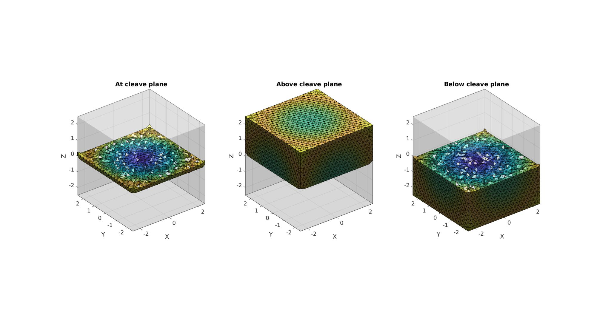
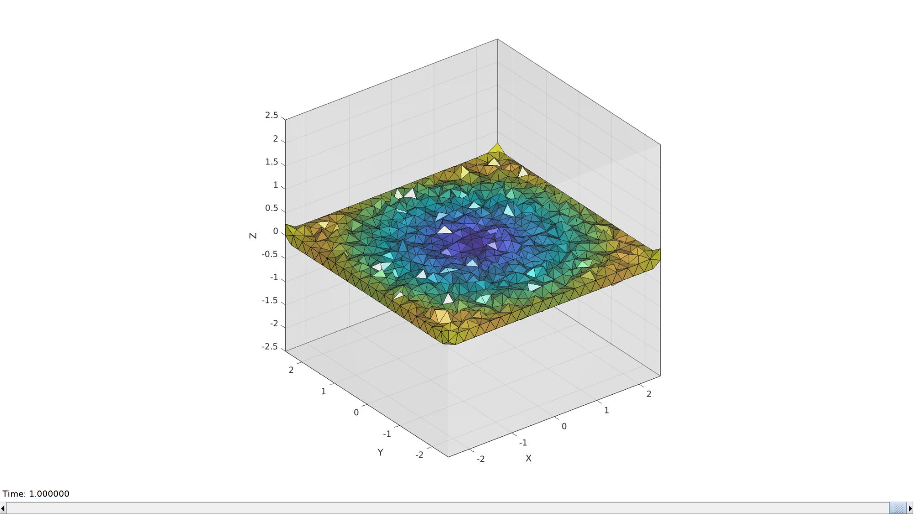
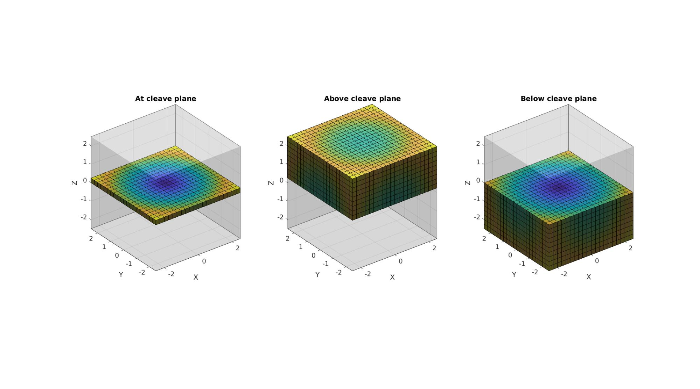
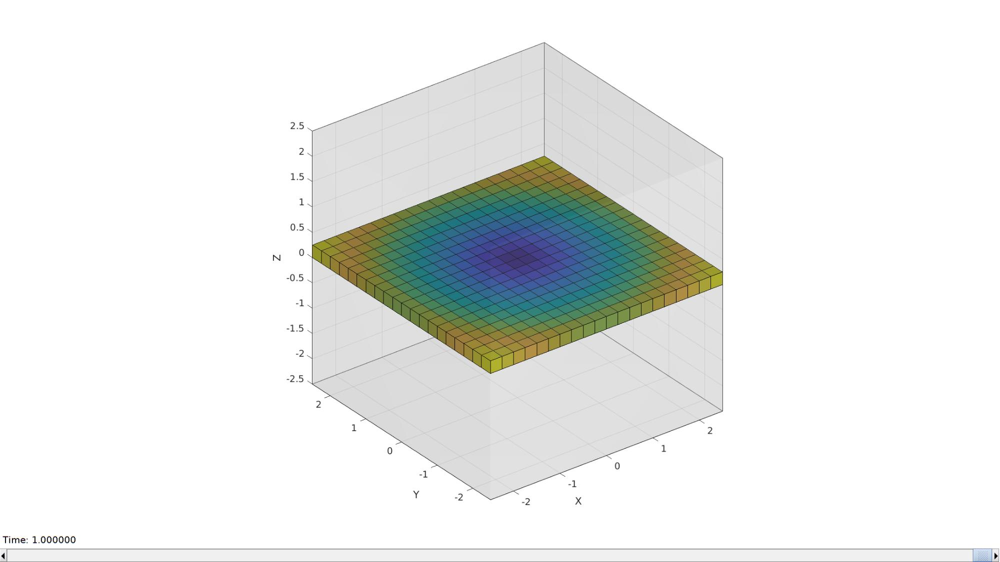

meshCleave
Below is a demonstration of the features of the meshCleave function
Contents
clear; close all; clc;
Syntax
[logicAt]=meshCleave(E,V); [logicAt]=meshCleave(E,V,P,n); [logicAt,logicAbove,logicBelow]=meshCleave(E,V,P,n,inclusiveSwitch); [logicAt,logicAbove,logicBelow]=meshCleave(E,V,P,n,inclusiveSwitch);
Description
This function creates logic arrays for the mesh components (e.g. elements or faces) which are at, above, or below a plane defined by the point P, and the normal direction n. The optional incluseSwitch is a 2-component vector (default [0 0]) and sets how "inclusive", the below/above logic is, i.e. they set wether < and > is used ([0 0]), or <= and >= are used ([1 1]). A combination may also be used e.g. [1 0] results in below checks which features <= and above checks using >.
Examples
clear; close all; clc;
Example: Cleaving a surface mesh
Create example patch data
[F,V]=stanford_bunny;
n=[0 0 1]; %Normal direction to plane P=mean(V,1); %Point on plane [logicAt,logicAbove,logicBelow]=meshCleave(F,V,P,n);
Visualize
cFigure; subplot(1,3,1); hold on; title('At cleave plane'); gpatch(F,V,'w','none',0.2); gpatch(F(logicAt,:),V,'bw','k',1); camlight headlight; axisGeom; subplot(1,3,2); hold on; title('Above cleave plane'); gpatch(F,V,'w','none',0.2); gpatch(F(logicAbove,:),V,'bw','k',1); camlight headlight; axisGeom; subplot(1,3,3); hold on; title('Below cleave plane'); gpatch(F,V,'w','none',0.2); gpatch(F(logicBelow,:),V,'bw','k',1); camlight headlight; axisGeom; gdrawnow;

Example 2: Cleaving a tetrahedral mesh
Creating an example tetrahedral mesh
boxDim=[5 5 5]; % Box dimenstions
pointSpacing=0.25;
[meshStruct]=tetMeshBox(boxDim,pointSpacing);
E=meshStruct.elements;
V=meshStruct.nodes;
F=meshStruct.facesBoundary;
VE=patchCentre(E,V);
C=minDist(VE,mean(VE,1));
%%%%%%%%%%%%%%%%%%%%%%%%%%%%%%%%%%%%%%%%%%%%% --- TETGEN Tetrahedral meshing --- 18-May-2020 23:01:48 %%%%%%%%%%%%%%%%%%%%%%%%%%%%%%%%%%%%%%%%%%%%% --- Writing SMESH file --- 18-May-2020 23:01:48 ----> Adding node field ----> Adding facet field ----> Adding holes specification ----> Adding region specification --- Done --- 18-May-2020 23:01:48 --- Running TetGen to mesh input boundary--- 18-May-2020 23:01:48 Opening /mnt/data/MATLAB/GIBBON/data/temp/temp.smesh. --- Done --- 18-May-2020 23:01:49 %%%%%%%%%%%%%%%%%%%%%%%%%%%%%%%%%%%%%%%%%%%%% --- Importing TetGen files --- 18-May-2020 23:01:49 --- Done --- 18-May-2020 23:01:49
n=[0 0 1]; %Normal direction to plane P=mean(V,1); %Point on plane [logicAt,logicAbove,logicBelow]=meshCleave(E,V,P,n); % Get faces and matching color data for visualization [F_cleave,CF_cleave]=element2patch(E(logicAt,:),C(logicAt)); [F_above,CF_above]=element2patch(E(logicAbove,:),C(logicAbove)); [F_below,CF_below]=element2patch(E(logicBelow,:),C(logicBelow));
Visualize
cFigure; subplot(1,3,1); hold on; title('At cleave plane'); gpatch(F,V,'w','none',0.2); gpatch(F_cleave,V,CF_cleave,'k',1); camlight headlight; axisGeom; subplot(1,3,2); hold on; title('Above cleave plane'); gpatch(F,V,'w','none',0.2); gpatch(F_above,V,CF_above,'k',1); camlight headlight; axisGeom; subplot(1,3,3); hold on; title('Below cleave plane'); gpatch(F,V,'w','none',0.2); gpatch(F_below,V,CF_below,'k',1); camlight headlight; axisGeom; gdrawnow;
Visualizing cleaving operation for varying angles
hf=cFigure; hold on; gpatch(F,V,'w','none',0.2); hp1=gpatch(F_cleave,V,CF_cleave,'k',1); axisGeom; axis manual; camlight headligth; gdrawnow; nSteps=50; %Number of animation steps %Create the time vector animStruct.Time=linspace(0,1,nSteps); %The vector lengths a=linspace(0,2*pi,nSteps); b=linspace(0,2*pi,nSteps); for q=1:1:nSteps R=euler2DCM([a(q) b(q) 0]); nn=n*R; logicAt=meshCleave(E,V,P,nn,[1 0]); % Get faces and matching color data for cleaves elements [F_cleave,CF_cleave]=element2patch(E(logicAt,:),C(logicAt)); %Set entries in animation structure animStruct.Handles{q}=[hp1 hp1]; %Handles of objects to animate animStruct.Props{q}={'Faces','CData'}; %Properties of objects to animate animStruct.Set{q}={F_cleave,CF_cleave}; %Property values for to set in order to animate end anim8(hf,animStruct);
Example 3: Cleaving a hexahedral mesh
boxDim=[5 5 5]; % Box dimenstions
boxEl=[20 20 20];
[meshStruct]=hexMeshBox(boxDim,boxEl,2);
E=meshStruct.elements;
V=meshStruct.nodes;
F=meshStruct.facesBoundary;
VE=patchCentre(E,V);
C=minDist(VE,mean(VE,1));
n=[0 0 1]; %Normal direction to plane P=mean(V,1); %Point on plane inclusiveSwitch=[1 0]; [logicAt,logicAbove,logicBelow]=meshCleave(E,V,P,n,inclusiveSwitch); logicPlot=logicAt; % Get faces and matching color data for visualization [F_cleave,CF_cleave]=element2patch(E(logicAt,:),C(logicAt)); [F_above,CF_above]=element2patch(E(logicAbove,:),C(logicAbove)); [F_below,CF_below]=element2patch(E(logicBelow,:),C(logicBelow));
Visualize
cFigure; subplot(1,3,1); hold on; title('At cleave plane'); gpatch(F,V,'w','none',0.2); gpatch(F_cleave,V,CF_cleave,'k',1); camlight headlight; axisGeom; subplot(1,3,2); hold on; title('Above cleave plane'); gpatch(F,V,'w','none',0.2); gpatch(F_above,V,CF_above,'k',1); camlight headlight; axisGeom; subplot(1,3,3); hold on; title('Below cleave plane'); gpatch(F,V,'w','none',0.2); gpatch(F_below,V,CF_below,'k',1); camlight headlight; axisGeom; gdrawnow;
Visualizing slicing operation for varying angles
hf=cFigure; hold on; gpatch(F,V,'w','none',0.2); hp1=gpatch(F_cleave,V,CF_cleave,'k',1); axisGeom; axis manual; camlight headligth; gdrawnow; nSteps=50; %Number of animation steps %Create the time vector animStruct.Time=linspace(0,1,nSteps); %The vector lengths a=linspace(0,2*pi,nSteps); b=linspace(0,2*pi,nSteps); for q=1:1:nSteps R=euler2DCM([a(q) b(q) 0]); nn=n*R; logicAt=meshCleave(E,V,P,nn,inclusiveSwitch); % Get faces and matching color data for cleaves elements [F_cleave,CF_cleave]=element2patch(E(logicAt,:),C(logicAt)); %Set entries in animation structure animStruct.Handles{q}=[hp1 hp1]; %Handles of objects to animate animStruct.Props{q}={'Faces','CData'}; %Properties of objects to animate animStruct.Set{q}={F_cleave,CF_cleave}; %Property values for to set in order to animate end anim8(hf,animStruct);